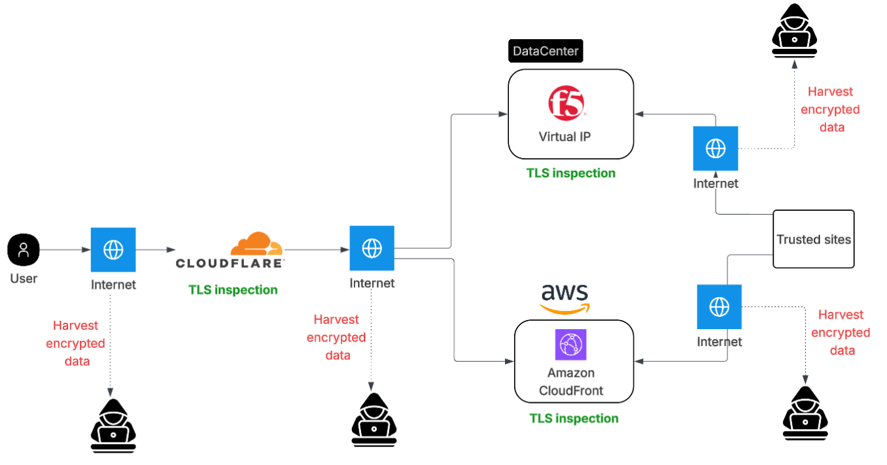

The Problem
The right starting point isn't cryptography — it's the network. Where does PII actually travel? Which segments of that path cross the internet and can be intercepted? Those are the segments where the quantum threat is real and where the organisation needs to act.
Where PII Flows
For most enterprise web applications, user PII travels through a common pattern: browser to CDN edge, then CDN to origin. TLS terminates at each of those two points. They're separate encrypted tunnels, not one end-to-end pipe. The organisation controls the configuration at both termination points. That matters for what comes next.

- Crosses the public internet — harvestable by nation-state or ISP tap
- Organisation controls CDN TLS config → PQC is achievable here
- Cloudflare: ML-KEM on by default for all TLS 1.3 zones
- May cross the internet (CDN PoP to origin datacenter)
- Organisation controls origin TLS config → PQC is achievable here
- F5 BIG-IP: ML-KEM available from TMOS 17.5.1+
Which Segments Can Be Harvested
An adversary capturing encrypted traffic doesn't need to be on your network. Both legs above cross infrastructure outside your control, and that's where interception is possible.
Leg 1: Browser to CDN
This is always internet traffic. The encrypted TLS session carrying login credentials, form data, API tokens. All of it traverses the public internet between the user's device and the CDN edge. It can be captured at ISP level, transit points, or via BGP manipulation. This is the highest-exposure segment.
Leg 2: CDN to Origin
Depends on the architecture. If the CDN PoP and your origin are in different regions or datacenters, this leg also crosses internet infrastructure, even if it uses a "private" peering path. Traffic intercepted on this leg contains the same application data, already decrypted and re-encrypted by the CDN.
Why the Key Exchange Step Is the Vulnerability
TLS does two separate things: it establishes a shared secret between client and server (key exchange), and it uses that secret to encrypt the actual data (AES-256). A quantum computer only threatens the first step. AES-256 isn't meaningfully affected.
Key Exchange
RSA and ECDH rely on mathematical problems that a sufficiently large quantum computer
can solve efficiently. This is the step where client and server agree on a shared secret
at the start of every TLS session.
Broken by quantum
Data Encryption
Once the shared secret is established, all application data (form submissions, API
responses, session tokens) is encrypted with AES-256. Quantum computers don't provide
a meaningful attack against AES-256 at current key lengths.
Not a quantum problem
Post-quantum cryptography replaces the key exchange algorithm only. The rest of TLS, the certificate, the cipher, the MAC. None of that changes. It's a targeted replacement, not a rebuild.
Harvest Now, Decrypt Later
The attack doesn't need a quantum computer to start. An adversary can capture and store the encrypted TLS sessions on Leg 1 and Leg 2 today. The decryption happens later, once a capable quantum computer exists. The window to protect against this is before the capture happens, not after.